In the last post, we implemented a Linear Classifier which used a SVM loss function and a SGD for optimization. In this post we are going to implement the same model but instead of a SVM loss function, we'll use a Softmax loss function. We'll also try to understand the differences between two loss functions. And we'll also try to build an intution about Softmax loss in general.
This post is partly inspired by the cs231n softmax classifier assignment and is inspired by class notes which you should read. Click here to view class notes for this section.
Softmax Loss
The softmax loss is defined as:
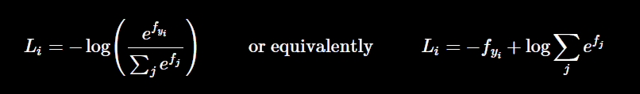
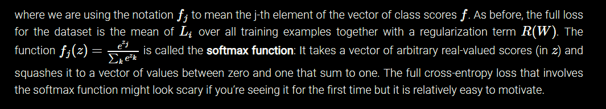
In simple terms, the exponent of the class score of the correct class is divided by the sum of exponents of class scores of all the classes. This function is called the softmax function and the negative logarithm of this gives us what we call softmax loss.
Practical Considerations
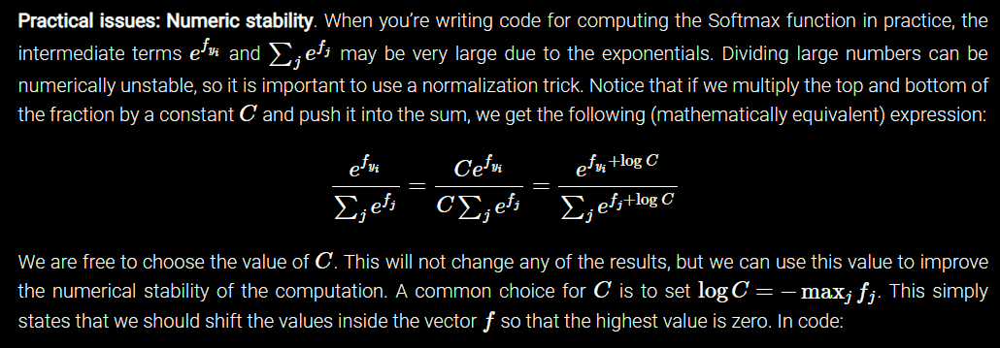
Code For The Softmax Classifier
You can donwload the Jupyter Notebook in which I've implemented a softmax classifier on the CIFAR-10 dataset. The accuracy was found to be around 38.5% on the test set. I suggest you download the jupyter notebook by clicking here and look at the code and try to implement it yourself. Please note that you'll have to get the CIFAR-10 dataset batch files. You'll also have to figure out a way to unpack the batch files. I suggest you go to the course website and download the assignment folder and put the dataset and the jupyter notebook on their respective places. This will solve all of your problems. Click here to go to the assignments page.
So, we have seen how the Softmax loss looks like and now its time we figure out the grad functions. We'll have to figure out two gradient functions one for the correct class and another for the rest of the incorrect classes. Loss is pretty straigtforward to implement, while gradient involves derivation w.r.t to both correct and incorrect classes. Download this PDF file to understand the derivation of gradients, it's pretty basic anyway. After you've understood the grads derivation, we are going to dive into the code to understand more.
Naive Implementation of Loss And Grads
This implementaion of loss and gradients involve for loops. It's pretty easy and intuitive to implement but is so damn slow. In the jupyter notebook we actually compare how many times the naive implementation slow as compared to the vectorized loss.
Vectorized Implementation of Loss And Grads
This is the vectorized implementation which uses the benefit of parallel computation power of the computers. It's not so intuitive to implement and think about but is totally worth the headache if you don't want to sit in front of your computer forever to train your model.
Stochastic Gradient Descent
Above code will optimize the weights and biases of the linear classifier according by minimizing the softmax loss function. This is same as we did in the SVM loss function code.
So, as you'll see in the Jupyter Notebook, our model after complete training gave the final training accuracy of 32% and the validation accuracy was around 35%. The accuracy on the test set after tuning the hyperparameters was found to be around 38.5%.
And now we'll see what the weight templates look like after complete training.
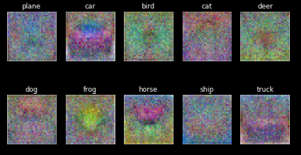
We can still figure out the few important features from these templates but it's pretty different from the ones we got from the SVM loss. Again, the Jupyter Notebook for this Softmax Classifier Implementation can be downloaded by clicking here.
SVM vs Softmax Loss
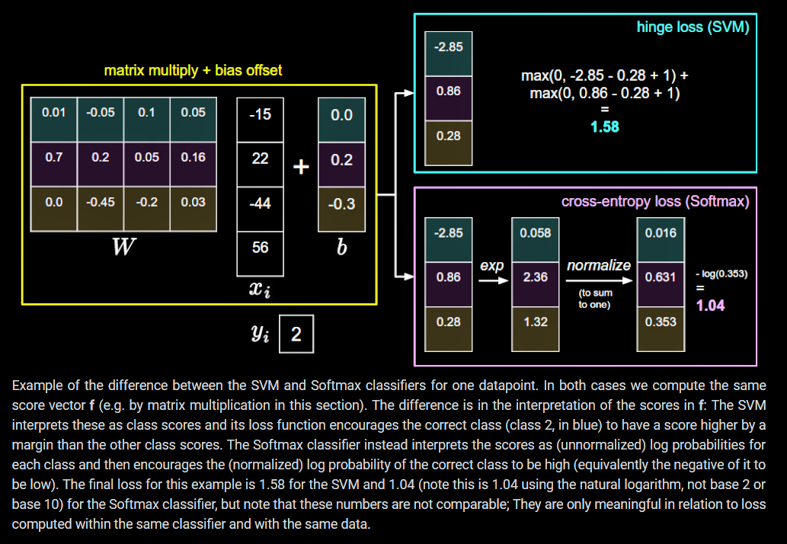
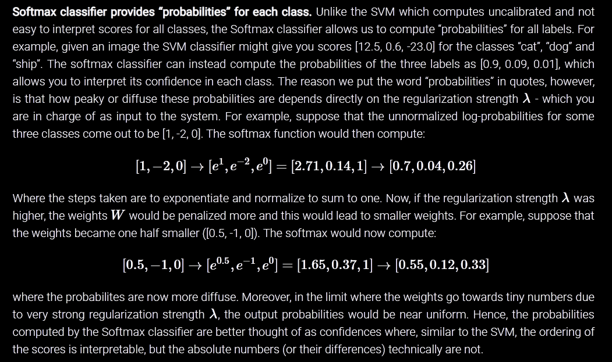
In pracitice, SVM and Softmax are usually comparable. Which one is better is usually an opionated issue. Compared to the Softmax Classifier, has a more local objective which can be thought of as a bug or a feature. Consider an example that achieves the scores [10, -2, 3] and where the first class is correct. An SVM (e.g. with desired margin of Δ = 1) will see that the correct class already has a score higher than the margin compared to the other classes and it will compute loss of zero. The SVM does not care about the details of the individual scores: if they were instead [ 10, -100, -100 ] or [ 10, 9, 9 ] the SVM would be indifferent since the margin of 1 is satisfied and hence the loss is zero. However, these scenarios are not equivalent to a Softmax classifier, which would accumulate a much higher loss for the scores [ 10, 9, 9 ] than for [ 10, -100, -100 ]. So, softmax loss is never fully content and it has always something to improve upon but a SVM loss is happy once it's margins are satisfied and it does not micromanages the exact scores beyond its constraints. This can be thought of as a feature or a bug depending on your application. For example, a car classifier which is likely spending most of its “effort” on the difficult problem of separating cars from trucks should not be influenced by the frog examples, which it already assigns very low scores to, and which likely cluster around a completely different side of the data cloud.
Applications of Softmax Function In Deep Neural Networks
This section of this post is inspired by this section of Michael Nielsen's excellent Neural Networks And Deep Learning Book. It shows how softmax function can be used as an activation function for the last layer of the deep neural networks.
The idea of softmax is to introduce a new kind of softmax layer for our neural networks. It begins in the same way as with a sigmoid layer, by forming the weighted inputs 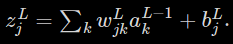 However we don't apply sigmoid activation function to get the final output scores. Instead, in a softmax layer we'll apply a softmax function to get the ouput. And hence, the ouput activations for the j-th neuron will be,
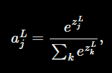
where in denominator we sum over all the output neurons.
Looking closely we can figure out that the sum of all the output activations is going to be equal to 1. We can prove with a little algebra that,
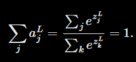
It is also clear that the output activations from each neuron will be positive because exponential function is always positive. And hence all activations are positive and they sum to 1, the output activations from the neurons of softmax layer can be thought of as a probability distribution. And this fact is rather pleasing to know as this is going to help us more clearly understand the results of the network. It's obvious if we used a sigmoid activation function in the last layer too, the result activations wouldn't necessarily form a probability distribution.
You can think of softmax as a way of rescaling the 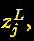 and then squishing them together to form a probability distribution.
The Learning Slowdown Problem
To understand the learning slowdown issue let's first define the log-likelihood cost function.
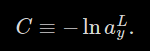
Now we can intuitively understand that this cost function works. If y-th class is a correct class than the the probability will be close to one and hence the cost will be close to 0. And if the probability is less, then the cost will be high.
To analyze the learning slowdown problem we'll have to find the derivatives of the cost function w.r.t both weights and the biases.
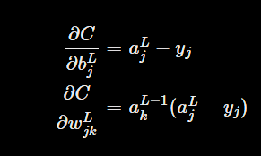
Looking at these equations above gives us confidence that softmax loss function just like cross entropy cost function doesn't suffers from the learning slowdown issue. Below are the same equations for the cross entropy cost function.
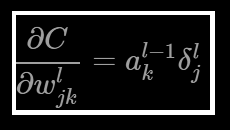
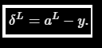
So we can either use sigmoid activation with cross-entropy cost or softmax activation with log likelihood cost. Both the techniques work well and the choice mostly depends on the application and requirements.